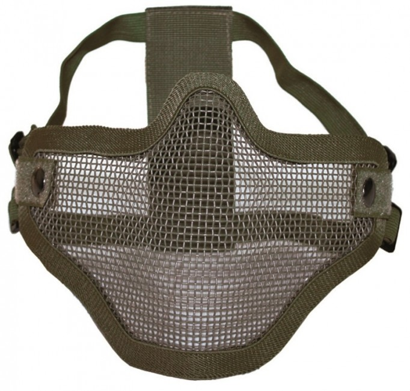
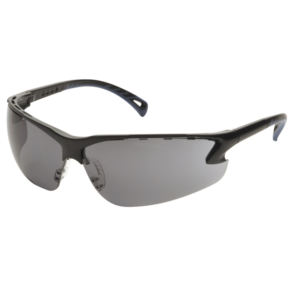

Charakteristika výstroja rozdeľuje hráčov na tri rôzne typy:
Podľa týchto charakteristík, by ste si mali zvoliť svoju výstroj
Možnosti výstroja sú v dnešnej dobe takmer neobmedzené a je iba otázkou financií. Vo všeobenosti sa dá povedať, že základným výstrojom hráča AS je:
Každý hráč musí mať špeciálne krytie očí. Či už okuliarami alebo maskou, ktorá kryje celú tvár. Pri okuliaroch je extrémne dôležité aby sa nerosili. Tu sa dokonale osvedčili tuhé plexisklové pracovné okuliare, ktoré nechajú vzduch zvislo prúdiť ale oči sú perfektne chránené. Sú lacnejšie a lepšie ako drahá maska na paintball.
 